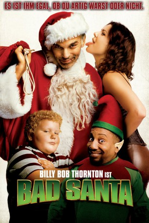

#219 Bad Santa
 gesehen am 11.12.2016
gesehen am 11.12.2016
 
 IMDB-Wertung: 7.1 / 10
IMDB-Wertung: 7.1 / 10  Metascore: 70
Metascore: 70 
Willie T. Stokes ist der verdorbenste Weihnachtsmann, den man sich vorstellen kann. Dieser Santa säuft, er flucht, er hurt herum. Er kommt regelmäßig zu spät, er beschimpft die Kinder, die sich zu ihm auf den Schoß setzen. Doch damit nicht genug: Obendrein nutzt Willie seine alljährliche Anstellung als Kaufhaus-Weihnachtsmann Tarnung, um mit seinem Kompagnon, dem kleinwüchsigen, aber nicht minder unflätigen Marcus, am Heiligen Abend nach getaner Arbeit den Safe des Kaufhauses zu knacken und sich mit der Beute aus dem Staub zu machen. Doch in diesem Jahr wird sich alles ändern: Denn diesmal haben es Willie und Marcus nicht nur mit einem argwöhnischen Einkaufszentrum-Manager und einem verschlagenen Kaufhausdetektiv zu tun, sondern auch mit dem sexy Santa-Fan Sue und einem unschuldigen Jungen, der einfach nicht aufhören will, an Santa zu glauben, auch wenn der ganz ganz schlimme Dinge tut.
Jahr: 2003
Dauer: 91 Minuten
FSK: 16
Land: USA Studio: Dimension FilmsTonspuren: DD5.1 - ,
Untertitel: Englisch, Deutsch,
Auflösung: 1080p (1920×1040) Größe: 9758 MB
Genre: Komödie, Krimi, Drama, Weihnachten
Regisseur: Terry Zwigoff
Drehbuch: Glenn Ficarra, John Requa
Soundtrack: David Kitay
Darsteller:
 Billy Bob Thornton als Willie
Billy Bob Thornton als Willie Tony Cox als Marcus
Tony Cox als Marcus Brett Kelly als The Kid
Brett Kelly als The Kid Lauren Graham als Sue
Lauren Graham als Sue Lauren Tom als Lois
Lauren Tom als Lois Bernie Mac als Gin
Bernie Mac als Gin John Ritter als Bob Chipeska
John Ritter als Bob Chipeska Ajay Naidu als Hindustani Troublemaker
Ajay Naidu als Hindustani Troublemaker Lorna Scott als Milwaukee Mother
Lorna Scott als Milwaukee Mother- Harrison Bieker als Milwaukee Boy
 Alex Borstein als Milwaukee Mom with Photo
Alex Borstein als Milwaukee Mom with Photo Billy Gardell als Milwaukee Security Guard
Billy Gardell als Milwaukee Security Guard- Lisa Ross als Milwaukee Bartender
 Bryan Callen als Miami Bartender
Bryan Callen als Miami Bartender Tom McGowan als Harrison
Tom McGowan als Harrison- Hayden Bromberg als Fraggle-Stick Boy
- Max Van Ville als Skateboard Bully
 Octavia Spencer als Opal
Octavia Spencer als Opal- Ryan Pinkston als Shoplifter
 Ethan Phillips als Roger Merman
Ethan Phillips als Roger Merman- Curtis Taylor als Phoenix Security Guard
- John Bunnell als Police Chief
- Dylan Cash als Kid on Bike , uncredited
 Cloris Leachman als Grandma , uncredited
Cloris Leachman als Grandma , uncredited Matt Walsh als Herb , uncredited
Matt Walsh als Herb , uncredited- Alexandra Korhan als Girl on Santa's Lap
- Dylan Charles als Milwaukee Bratty Boy
- Grace Calderon als Big Booty Woman
- Christine Pichardo als Photo Elf
- Bucky Dominick als Nintendo Deer Hunter 3 Boy
- Georgia Eskew als Barbie Girl
- Briana Norton als Pinball Girl
- Hallie Singleton als Woman in Food Court
- Natsuko Ohama als Pedicurist
- Dave Adams als Prison Guard
- Joey Saravia als Pokemon Child
- Cody Strauch als Watching Boy
- Marshall Dvorin als Watching Boy
Datei: X:\2-Dilogie(A-F)\Bad Santa\Bad Santa (2003, FSK16, 1920x1040).mkv seit 14.02.2015
Festplatte: HD Collection-2(A-Z)-3(A-M)
 Alle Filme aus Gruppe '2-Dilogie(A-F)\Bad Santa'
Alle Filme aus Gruppe '2-Dilogie(A-F)\Bad Santa'